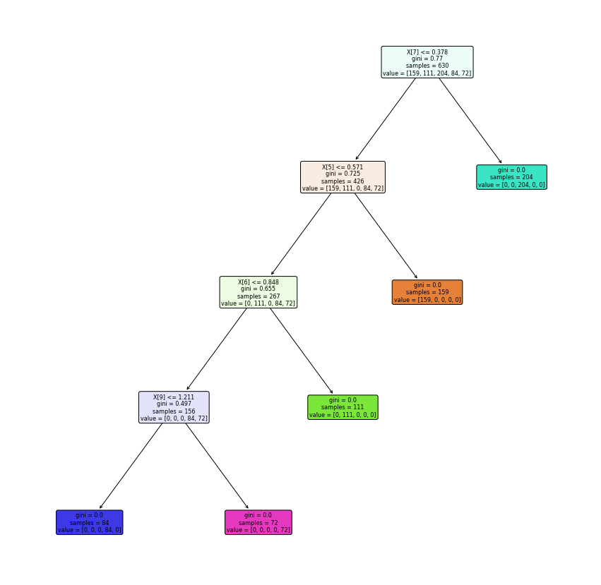

Tugas 7,8,9 - Analisis Data Nasabah Using Bagging and Stacking(Credit Risk)
Contents
Tugas 7,8,9 - Analisis Data Nasabah Using Bagging and Stacking(Credit Risk)#
Preprocessing Data#
# Import library yang diperlukan
import pandas as pd
import numpy as np
from sklearn import preprocessing
dataset = pd.read_excel("https://raw.githubusercontent.com/febyfadlilah/dataset/main/credit_score.xlsx")
# Menampilkan data skor kredit
dataset.head()
| Unnamed: 0 | kode_kontrak | pendapatan_setahun_juta | kpr_aktif | durasi_pinjaman_bulan | jumlah_tanggungan | rata_rata_overdue | risk_rating | |
|---|---|---|---|---|---|---|---|---|
| 0 | 1 | AGR-000001 | 295 | YA | 48 | 5 | 61 - 90 days | 4 |
| 1 | 2 | AGR-000011 | 271 | YA | 36 | 5 | 61 - 90 days | 4 |
| 2 | 3 | AGR-000030 | 159 | TIDAK | 12 | 0 | 0 - 30 days | 1 |
| 3 | 4 | AGR-000043 | 210 | YA | 12 | 3 | 46 - 60 days | 3 |
| 4 | 5 | AGR-000049 | 165 | TIDAK | 36 | 0 | 31 - 45 days | 2 |
# Menampilkan data skor kredit
dataset.head()
| Unnamed: 0 | kode_kontrak | pendapatan_setahun_juta | kpr_aktif | durasi_pinjaman_bulan | jumlah_tanggungan | rata_rata_overdue | risk_rating | |
|---|---|---|---|---|---|---|---|---|
| 0 | 1 | AGR-000001 | 295 | YA | 48 | 5 | 61 - 90 days | 4 |
| 1 | 2 | AGR-000011 | 271 | YA | 36 | 5 | 61 - 90 days | 4 |
| 2 | 3 | AGR-000030 | 159 | TIDAK | 12 | 0 | 0 - 30 days | 1 |
| 3 | 4 | AGR-000043 | 210 | YA | 12 | 3 | 46 - 60 days | 3 |
| 4 | 5 | AGR-000049 | 165 | TIDAK | 36 | 0 | 31 - 45 days | 2 |
Transformasi Data Kategorikal to Numerik dengan One-Hot Encoding
# Mengambil kolom kpr aktif dan mentranformasikan menggunakan one-hot encoding
df_kpr_aktif=pd.get_dummies(dataset['kpr_aktif'])
df_kpr_aktif.head()
| TIDAK | YA | |
|---|---|---|
| 0 | 0 | 1 |
| 1 | 0 | 1 |
| 2 | 1 | 0 |
| 3 | 0 | 1 |
| 4 | 1 | 0 |
# Mengambil kolom rata-rata overdue mentranformasi menggunakan one-hot encoding
rata_rata_overdue=pd.get_dummies(dataset['rata_rata_overdue'])
rata_rata_overdue.head()
| 0 - 30 days | 31 - 45 days | 46 - 60 days | 61 - 90 days | > 90 days | |
|---|---|---|---|---|---|
| 0 | 0 | 0 | 0 | 1 | 0 |
| 1 | 0 | 0 | 0 | 1 | 0 |
| 2 | 1 | 0 | 0 | 0 | 0 |
| 3 | 0 | 0 | 1 | 0 | 0 |
| 4 | 0 | 1 | 0 | 0 | 0 |
# Mengambil data numeric
numeric = pd.DataFrame(dataset, columns = ['kode_kontrak','pendapatan_setahun_juta','durasi_pinjaman_bulan','jumlah_tanggungan','risk_rating'])
numeric.head()
| kode_kontrak | pendapatan_setahun_juta | durasi_pinjaman_bulan | jumlah_tanggungan | risk_rating | |
|---|---|---|---|---|---|
| 0 | AGR-000001 | 295 | 48 | 5 | 4 |
| 1 | AGR-000011 | 271 | 36 | 5 | 4 |
| 2 | AGR-000030 | 159 | 12 | 0 | 1 |
| 3 | AGR-000043 | 210 | 12 | 3 | 3 |
| 4 | AGR-000049 | 165 | 36 | 0 | 2 |
# Menampilkan gabungan beberapa kolom yang telah diproses
dataset_baru = pd.concat([numeric, df_kpr_aktif, rata_rata_overdue], axis=1)
dataset_baru.head()
| kode_kontrak | pendapatan_setahun_juta | durasi_pinjaman_bulan | jumlah_tanggungan | risk_rating | TIDAK | YA | 0 - 30 days | 31 - 45 days | 46 - 60 days | 61 - 90 days | > 90 days | |
|---|---|---|---|---|---|---|---|---|---|---|---|---|
| 0 | AGR-000001 | 295 | 48 | 5 | 4 | 0 | 1 | 0 | 0 | 0 | 1 | 0 |
| 1 | AGR-000011 | 271 | 36 | 5 | 4 | 0 | 1 | 0 | 0 | 0 | 1 | 0 |
| 2 | AGR-000030 | 159 | 12 | 0 | 1 | 1 | 0 | 1 | 0 | 0 | 0 | 0 |
| 3 | AGR-000043 | 210 | 12 | 3 | 3 | 0 | 1 | 0 | 0 | 1 | 0 | 0 |
| 4 | AGR-000049 | 165 | 36 | 0 | 2 | 1 | 0 | 0 | 1 | 0 | 0 | 0 |
# Mengambil kolom selain kode_kontrak dan risk_rating dan melakukan normalisasi data
normalisasi = dataset_baru.drop(["kode_kontrak", "risk_rating"], axis=1)
Normalisas data dengan menggunakan Min Max#
from sklearn.preprocessing import MinMaxScaler
# Melakukan scaler fitur
scaler = MinMaxScaler()
model =scaler.fit(normalisasi)
scaled_data=model.transform(normalisasi)
# Menampilkan scaler fitur
print(scaled_data)
[[0.97826087 1. 0.83333333 ... 0. 1. 0. ]
[0.87391304 0.66666667 0.83333333 ... 0. 1. 0. ]
[0.38695652 0. 0. ... 0. 0. 0. ]
...
[0.4173913 0.33333333 0.33333333 ... 0. 0. 0. ]
[0.54782609 1. 0. ... 0. 0. 0. ]
[0.5826087 0.33333333 0.33333333 ... 0. 0. 0. ]]
# Menampilkan data normalisasi dari min max
namakolom = normalisasi.columns.values
dataMinMax = pd.DataFrame(scaled_data, columns=namakolom)
dataMinMax.head()
| pendapatan_setahun_juta | durasi_pinjaman_bulan | jumlah_tanggungan | TIDAK | YA | 0 - 30 days | 31 - 45 days | 46 - 60 days | 61 - 90 days | > 90 days | |
|---|---|---|---|---|---|---|---|---|---|---|
| 0 | 0.978261 | 1.000000 | 0.833333 | 0.0 | 1.0 | 0.0 | 0.0 | 0.0 | 1.0 | 0.0 |
| 1 | 0.873913 | 0.666667 | 0.833333 | 0.0 | 1.0 | 0.0 | 0.0 | 0.0 | 1.0 | 0.0 |
| 2 | 0.386957 | 0.000000 | 0.000000 | 1.0 | 0.0 | 1.0 | 0.0 | 0.0 | 0.0 | 0.0 |
| 3 | 0.608696 | 0.000000 | 0.500000 | 0.0 | 1.0 | 0.0 | 0.0 | 1.0 | 0.0 | 0.0 |
| 4 | 0.413043 | 0.666667 | 0.000000 | 1.0 | 0.0 | 0.0 | 1.0 | 0.0 | 0.0 | 0.0 |
# Min Max Scale dengan Min = 1 dan Max =2
scaler = MinMaxScaler(feature_range=(1,2))
model =scaler.fit(normalisasi)
scaled_data2=model.transform(normalisasi)
# Menampilkan skala fitur
print(scaled_data2)
[[1.97826087 2. 1.83333333 ... 1. 2. 1. ]
[1.87391304 1.66666667 1.83333333 ... 1. 2. 1. ]
[1.38695652 1. 1. ... 1. 1. 1. ]
...
[1.4173913 1.33333333 1.33333333 ... 1. 1. 1. ]
[1.54782609 2. 1. ... 1. 1. 1. ]
[1.5826087 1.33333333 1.33333333 ... 1. 1. 1. ]]
# Menampilkan data normalisasi dari min=1 dan max=2
dataMinMax2 = pd.DataFrame(scaled_data2, columns=normalisasi.columns.values)
dataMinMax2.head()
| pendapatan_setahun_juta | durasi_pinjaman_bulan | jumlah_tanggungan | TIDAK | YA | 0 - 30 days | 31 - 45 days | 46 - 60 days | 61 - 90 days | > 90 days | |
|---|---|---|---|---|---|---|---|---|---|---|
| 0 | 1.978261 | 2.000000 | 1.833333 | 1.0 | 2.0 | 1.0 | 1.0 | 1.0 | 2.0 | 1.0 |
| 1 | 1.873913 | 1.666667 | 1.833333 | 1.0 | 2.0 | 1.0 | 1.0 | 1.0 | 2.0 | 1.0 |
| 2 | 1.386957 | 1.000000 | 1.000000 | 2.0 | 1.0 | 2.0 | 1.0 | 1.0 | 1.0 | 1.0 |
| 3 | 1.608696 | 1.000000 | 1.500000 | 1.0 | 2.0 | 1.0 | 1.0 | 2.0 | 1.0 | 1.0 |
| 4 | 1.413043 | 1.666667 | 1.000000 | 2.0 | 1.0 | 1.0 | 2.0 | 1.0 | 1.0 | 1.0 |
Normalisasi dengan Z-Score#
# Melakukan normalisasi dengan z score atau standarscale
from sklearn.preprocessing import StandardScaler
scaler = StandardScaler()
model = (scaler.fit(normalisasi))
data_mean = (scaler.mean_)
scale_data = (scaler.transform(normalisasi))
print(scale_data)
[[ 2.54041987 1.32217147 1.03062105 ... -0.6912543 2.54950976
-0.35949218]
[ 2.07740679 0.4439764 1.03062105 ... -0.6912543 2.54950976
-0.35949218]
[-0.08332092 -1.31241375 -1.46147714 ... -0.6912543 -0.39223227
-0.35949218]
...
[ 0.05172456 -0.43421867 -0.46463786 ... -0.6912543 -0.39223227
-0.35949218]
[ 0.63049091 1.32217147 -1.46147714 ... -0.6912543 -0.39223227
-0.35949218]
[ 0.78482861 -0.43421867 -0.46463786 ... -0.6912543 -0.39223227
-0.35949218]]
# Menampilkan data normalisasi dari z score
dataZScale = pd.DataFrame(scale_data, columns=normalisasi.columns.values)
dataZScale.head()
| pendapatan_setahun_juta | durasi_pinjaman_bulan | jumlah_tanggungan | TIDAK | YA | 0 - 30 days | 31 - 45 days | 46 - 60 days | 61 - 90 days | > 90 days | |
|---|---|---|---|---|---|---|---|---|---|---|
| 0 | 2.540420 | 1.322171 | 1.030621 | -0.868554 | 0.868554 | -0.580772 | -0.463222 | -0.691254 | 2.549510 | -0.359492 |
| 1 | 2.077407 | 0.443976 | 1.030621 | -0.868554 | 0.868554 | -0.580772 | -0.463222 | -0.691254 | 2.549510 | -0.359492 |
| 2 | -0.083321 | -1.312414 | -1.461477 | 1.151339 | -1.151339 | 1.721847 | -0.463222 | -0.691254 | -0.392232 | -0.359492 |
| 3 | 0.900582 | -1.312414 | 0.033782 | -0.868554 | 0.868554 | -0.580772 | -0.463222 | 1.446646 | -0.392232 | -0.359492 |
| 4 | 0.032432 | 0.443976 | -1.461477 | 1.151339 | -1.151339 | -0.580772 | 2.158791 | -0.691254 | -0.392232 | -0.359492 |
Menggabungkan Kolom Normlisasi
# Mengambil kolom kode kontak dan risk rating
data_kontrak_risk= pd.DataFrame(dataset, columns=['kode_kontrak','risk_rating'])
# Menggabungkan kolom yang sudah dinormalisasi dan data sebelumnya
kredit_min_max = pd.concat([data_kontrak_risk, dataMinMax], axis=1)
kredit_min_max.head()
| kode_kontrak | risk_rating | pendapatan_setahun_juta | durasi_pinjaman_bulan | jumlah_tanggungan | TIDAK | YA | 0 - 30 days | 31 - 45 days | 46 - 60 days | 61 - 90 days | > 90 days | |
|---|---|---|---|---|---|---|---|---|---|---|---|---|
| 0 | AGR-000001 | 4 | 0.978261 | 1.000000 | 0.833333 | 0.0 | 1.0 | 0.0 | 0.0 | 0.0 | 1.0 | 0.0 |
| 1 | AGR-000011 | 4 | 0.873913 | 0.666667 | 0.833333 | 0.0 | 1.0 | 0.0 | 0.0 | 0.0 | 1.0 | 0.0 |
| 2 | AGR-000030 | 1 | 0.386957 | 0.000000 | 0.000000 | 1.0 | 0.0 | 1.0 | 0.0 | 0.0 | 0.0 | 0.0 |
| 3 | AGR-000043 | 3 | 0.608696 | 0.000000 | 0.500000 | 0.0 | 1.0 | 0.0 | 0.0 | 1.0 | 0.0 | 0.0 |
| 4 | AGR-000049 | 2 | 0.413043 | 0.666667 | 0.000000 | 1.0 | 0.0 | 0.0 | 1.0 | 0.0 | 0.0 | 0.0 |
# Menggabungkan kolom yang sudah dinormalisasi dan data sebelumnya
kredit_min1_max2 = pd.concat([data_kontrak_risk, dataMinMax2], axis=1)
kredit_min1_max2.head()
| kode_kontrak | risk_rating | pendapatan_setahun_juta | durasi_pinjaman_bulan | jumlah_tanggungan | TIDAK | YA | 0 - 30 days | 31 - 45 days | 46 - 60 days | 61 - 90 days | > 90 days | |
|---|---|---|---|---|---|---|---|---|---|---|---|---|
| 0 | AGR-000001 | 4 | 1.978261 | 2.000000 | 1.833333 | 1.0 | 2.0 | 1.0 | 1.0 | 1.0 | 2.0 | 1.0 |
| 1 | AGR-000011 | 4 | 1.873913 | 1.666667 | 1.833333 | 1.0 | 2.0 | 1.0 | 1.0 | 1.0 | 2.0 | 1.0 |
| 2 | AGR-000030 | 1 | 1.386957 | 1.000000 | 1.000000 | 2.0 | 1.0 | 2.0 | 1.0 | 1.0 | 1.0 | 1.0 |
| 3 | AGR-000043 | 3 | 1.608696 | 1.000000 | 1.500000 | 1.0 | 2.0 | 1.0 | 1.0 | 2.0 | 1.0 | 1.0 |
| 4 | AGR-000049 | 2 | 1.413043 | 1.666667 | 1.000000 | 2.0 | 1.0 | 1.0 | 2.0 | 1.0 | 1.0 | 1.0 |
# Menggabungkan kolom yang sudah dinormalisasi Z score dan data sebelumnya
kredit_Zscore = pd.concat([data_kontrak_risk, dataZScale], axis=1)
kredit_Zscore.head()
| kode_kontrak | risk_rating | pendapatan_setahun_juta | durasi_pinjaman_bulan | jumlah_tanggungan | TIDAK | YA | 0 - 30 days | 31 - 45 days | 46 - 60 days | 61 - 90 days | > 90 days | |
|---|---|---|---|---|---|---|---|---|---|---|---|---|
| 0 | AGR-000001 | 4 | 2.540420 | 1.322171 | 1.030621 | -0.868554 | 0.868554 | -0.580772 | -0.463222 | -0.691254 | 2.549510 | -0.359492 |
| 1 | AGR-000011 | 4 | 2.077407 | 0.443976 | 1.030621 | -0.868554 | 0.868554 | -0.580772 | -0.463222 | -0.691254 | 2.549510 | -0.359492 |
| 2 | AGR-000030 | 1 | -0.083321 | -1.312414 | -1.461477 | 1.151339 | -1.151339 | 1.721847 | -0.463222 | -0.691254 | -0.392232 | -0.359492 |
| 3 | AGR-000043 | 3 | 0.900582 | -1.312414 | 0.033782 | -0.868554 | 0.868554 | -0.580772 | -0.463222 | 1.446646 | -0.392232 | -0.359492 |
| 4 | AGR-000049 | 2 | 0.032432 | 0.443976 | -1.461477 | 1.151339 | -1.151339 | -0.580772 | 2.158791 | -0.691254 | -0.392232 | -0.359492 |
Membagi Data menjadi data testing dan training dengan pengujian Min Max
# Mengambil kelas dan fitur dari dataset
# fiturnya
X_min_max = kredit_min_max.iloc[:,2:12].values
# classnya
y_min_max = kredit_min_max.iloc[:,1].values
# Membagi data menjadi data training dan data uji dengan data uji berjumlah 30%
from sklearn.model_selection import train_test_split
X_trainn_min_max, X_testn_min_max, y_trainn_min_max, y_testn_min_max = train_test_split(X_min_max, y_min_max, test_size=0.30, random_state=0, stratify=y_min_max)
# Mengambil kelas dan fitur dari dataset dan diuji dengan min = 1 dan max = 2
# fiturnya
X_min1_max2 = kredit_min1_max2.iloc[:,2:12].values
# classnya
y_min1_max2 = kredit_min1_max2.iloc[:,1].values
# Membagi data menjadi data training dan data uji dengan data uji berjumlah 30%
X_trainn_min1_max2, X_testn_min1_max2, y_trainn_min1_max2, y_testn_min1_max2 = train_test_split(X_min1_max2, y_min1_max2, test_size=0.30, random_state=0, stratify=y_min1_max2)
Membagi data menjadi data training dan uji dengan Z-Score
# Mengambil kelas dan fitur dari dataset
# fiturnya
X_Zscore = kredit_Zscore.iloc[:,2:12].values
# classnya
y_Zscore = kredit_Zscore.iloc[:,1].values
# Membagi data menjadi data training dan data uji dengan data uji berjumlah 30%
X_trainn_Zscore, X_testn_Zscore, y_trainn_Zscore, y_testn_Zscore = train_test_split(X_Zscore, y_Zscore, test_size=0.30, random_state=0, stratify=y_Zscore)
Model Naive Bayes#
# Melakukan import library yang diperlukan
from sklearn.metrics import make_scorer, accuracy_score,precision_score
from sklearn.metrics import accuracy_score ,precision_score,recall_score,f1_score
from sklearn.metrics import confusion_matrix
from sklearn.model_selection import KFold,train_test_split,cross_val_score
from sklearn.naive_bayes import GaussianNB
from sklearn.model_selection import train_test_split
# Menghitung akurasi presisi dari naive bayes dengan normalisasi min max
gaussian = GaussianNB()
gaussian.fit(X_trainn_min_max, y_trainn_min_max)
Y_predn_min_max = gaussian.predict(X_testn_min_max)
accuracy_n_min_max=round(accuracy_score(y_testn_min_max,Y_predn_min_max)* 100, 2)
acc_gaussian = round(gaussian.score(X_trainn_min_max, y_trainn_min_max) * 100, 2)
confusion_m_min_max = confusion_matrix(y_testn_min_max, Y_predn_min_max)
accuracy_n_min_max = accuracy_score(y_testn_min_max,Y_predn_min_max)
precision_n_min_max =precision_score(y_testn_min_max, Y_predn_min_max,average='micro')
recall_n_min_max = recall_score(y_testn_min_max, Y_predn_min_max,average='micro')
f1_n_min_max = f1_score(y_testn_min_max,Y_predn_min_max,average='micro')
print('Confusion matrix untuk Naive Bayes\n',confusion_m_min_max)
print('Akurasi Naive Bayes: %.3f' %accuracy_n_min_max)
print('Precision Naive Bayes: %.3f' %precision_n_min_max)
print('Recall Naive Bayes: %.3f' %recall_n_min_max)
print('f1-score Naive Bayes : %.3f' %f1_n_min_max)
Confusion matrix untuk Naive Bayes
[[68 0 0 0 0]
[ 0 48 0 0 0]
[ 0 0 87 0 0]
[ 0 0 0 36 0]
[ 0 0 0 0 31]]
Akurasi Naive Bayes: 1.000
Precision Naive Bayes: 1.000
Recall Naive Bayes: 1.000
f1-score Naive Bayes : 1.000
Naive Bayes dengan Normalisasi Min = 1 dan Max = 2
# Menghitung akurasi presisi dari naive bayes dengan normalisasi min=1 dan max=2
gaussian = GaussianNB()
gaussian.fit(X_trainn_min1_max2, y_trainn_min1_max2)
Y_predn_min1_max2 = gaussian.predict(X_testn_min1_max2)
accuracy_n_min1_max2=round(accuracy_score(y_testn_min1_max2,Y_predn_min1_max2)* 100, 2)
acc_gaussian = round(gaussian.score(X_trainn_min1_max2, y_trainn_min1_max2) * 100, 2)
confusion_m_min1_max2 = confusion_matrix(y_testn_min1_max2, Y_predn_min1_max2)
accuracy_n_min1_max2 = accuracy_score(y_testn_min1_max2,Y_predn_min1_max2)
precision_n_min1_max2 =precision_score(y_testn_min1_max2, Y_predn_min1_max2,average='micro')
recall_n_min1_max2 = recall_score(y_testn_min1_max2, Y_predn_min1_max2,average='micro')
f1_n_min1_max2 = f1_score(y_testn_min1_max2,Y_predn_min1_max2,average='micro')
print('Confusion matrix untuk Naive Bayes\n',confusion_m_min1_max2)
print('Akurasi Naive Bayes: %.3f' %accuracy_n_min1_max2)
print('Precision Naive Bayes: %.3f' %precision_n_min1_max2)
print('Recall Naive Bayes: %.3f' %recall_n_min1_max2)
print('f1-score Naive Bayes : %.3f' %f1_n_min1_max2)
Confusion matrix untuk Naive Bayes
[[68 0 0 0 0]
[ 0 48 0 0 0]
[ 0 0 87 0 0]
[ 0 0 0 36 0]
[ 0 0 0 0 31]]
Akurasi Naive Bayes: 1.000
Precision Naive Bayes: 1.000
Recall Naive Bayes: 1.000
f1-score Naive Bayes : 1.000
Naive Bayes dengan Normalisasi Z-Score
# Menghitung akurasi presisi dari naive bayes dengan normalisasi z score
gaussian = GaussianNB()
gaussian.fit(X_trainn_Zscore, y_trainn_Zscore)
Y_predn_Zscore = gaussian.predict(X_testn_Zscore)
accuracy_n_Zscore=round(accuracy_score(y_testn_Zscore,Y_predn_Zscore)* 100, 2)
acc_gaussian = round(gaussian.score(X_trainn_Zscore, y_trainn_Zscore) * 100, 2)
confusion_m_Zscore = confusion_matrix(y_testn_Zscore, Y_predn_Zscore)
accuracy_n_Zscore = accuracy_score(y_testn_Zscore,Y_predn_Zscore)
precision_n_Zscore =precision_score(y_testn_Zscore, Y_predn_Zscore,average='micro')
recall_n_Zscore = recall_score(y_testn_Zscore, Y_predn_Zscore,average='micro')
f1_n_Zscore = f1_score(y_testn_Zscore,Y_predn_Zscore,average='micro')
print('Confusion matrix untuk Naive Bayes\n',confusion_m_Zscore)
print('Akurasi Naive Bayes: %.3f' %accuracy_n_Zscore)
print('Precision Naive Bayes: %.3f' %precision_n_Zscore)
print('Recall Naive Bayes: %.3f' %recall_n_Zscore)
print('f1-score Naive Bayes : %.3f' %f1_n_Zscore)
Confusion matrix untuk Naive Bayes
[[68 0 0 0 0]
[ 0 48 0 0 0]
[ 0 0 87 0 0]
[ 0 0 0 36 0]
[ 0 0 0 0 31]]
Akurasi Naive Bayes: 1.000
Precision Naive Bayes: 1.000
Recall Naive Bayes: 1.000
f1-score Naive Bayes : 1.000
Model KNN#
KNN dengan Normalisasi Min Max
# Menghitung akurasi dari KNN dengan normalisasi min dan max
from sklearn.neighbors import KNeighborsClassifier
neigh = KNeighborsClassifier(n_neighbors=3)
neigh.fit(X_trainn_min_max, y_trainn_min_max)
acc_knn = round(neigh.score(X_trainn_min_max, y_trainn_min_max) * 100, 2)
print("Akurasi KNN :",acc_knn)
Akurasi KNN : 99.68
KNN dengan Normalisasi Z Score
# Menghitung akurasi dari KNN dengan normalisasi z score
from sklearn.neighbors import KNeighborsClassifier
neigh = KNeighborsClassifier(n_neighbors=3)
neigh.fit(X_trainn_Zscore, y_trainn_Zscore)
acc_knn = round(neigh.score(X_trainn_Zscore, y_trainn_Zscore) * 100, 2)
print("Akurasi KNN :",acc_knn)
Akurasi KNN : 100.0
Decision Tree#
# Import library yang diperlukan pada decision tree
from sklearn.metrics import accuracy_score
from sklearn import tree
from sklearn import metrics
from matplotlib import pyplot as plt
Decision Tree dengan Normalisasi Min dan Max
# Menghitung akurasi dengan menggunakan gini indek dengan normalisasi min max
clf = tree.DecisionTreeClassifier(criterion="gini")
clf = clf.fit(X_trainn_min_max, y_trainn_min_max)
y_predn_min_max = clf.predict(X_testn_min_max)
print("Accuracy_Decision Tree :",metrics.accuracy_score(y_testn_min_max,y_predn_min_max))
Accuracy_Decision Tree : 1.0
Decision Tree dengan Normalisasi Min = 1 dan Max = 2
# Menghitung akurasi dengan menggunakan gini indek dengan normalisasi Min=1 dan Max=2
clf = tree.DecisionTreeClassifier(criterion="gini")
clf = clf.fit(X_trainn_min1_max2, y_trainn_min1_max2)
y_predn_min1_max2 = clf.predict(X_testn_min1_max2)
print("Accuracy_Decision Tree :",metrics.accuracy_score(y_testn_min1_max2, y_predn_min1_max2))
Accuracy_Decision Tree : 1.0
Decision Tree#
Decision Tree dengan Normalisasi Z-Score
# Menghitung akurasi dengan menggunakan gini indek dengan normalisasi Z Score
clf = tree.DecisionTreeClassifier(criterion="gini")
clf = clf.fit(X_trainn_Zscore, y_trainn_Zscore)
y_predn_Zscore = clf.predict(X_testn_Zscore)
print("Accuracy_Decision Tree :",metrics.accuracy_score(y_testn_Zscore,y_predn_Zscore))
Accuracy_Decision Tree :
1.0
# gambar bentuk decision tree
plt.figure(figsize=(15,15))
#Membuat plot
a = tree.plot_tree(clf,
rounded = True,
filled = True,
fontsize=8)
#Menampilkan plot
plt.show()

Tugas 8 - Penerapan Bagging Ensemble Learning Data Credit Risk#
# Import library yang diperlukan
from sklearn.ensemble import BaggingClassifier
from sklearn.neighbors import KNeighborsClassifier
from sklearn.tree import DecisionTreeClassifier
clf = BaggingClassifier(base_estimator=DecisionTreeClassifier(),n_estimators=10, random_state=0).fit(X_trainn_min_max, y_trainn_min_max)
rsb = clf.predict(X_testn_min_max)
b = ['Decision Tree']
Tree = pd.DataFrame(rsb,columns = b)
X_testn_min_max.shape
(270, 10)
K = 10
clf = BaggingClassifier(base_estimator=KNeighborsClassifier(n_neighbors = K),n_estimators=10, random_state=0).fit(X_trainn_min_max, y_trainn_min_max)
rsa = clf.predict(X_testn_min_max)
a = ['KNN']
KNN = pd.DataFrame(rsa,columns = a)
clf = BaggingClassifier(base_estimator=GaussianNB(),n_estimators=10, random_state=0).fit(X_trainn_min_max, y_trainn_min_max)
rsc = clf.predict(X_testn_min_max)
c = ['Naive Bayes']
Bayes = pd.DataFrame(rsc,columns = c)
Result = pd.concat([Tree, KNN,Bayes], axis=1)
Result
| Decision Tree | KNN | Naive Bayes | |
|---|---|---|---|
| 0 | 4 | 4 | 4 |
| 1 | 3 | 3 | 3 |
| 2 | 1 | 1 | 1 |
| 3 | 3 | 3 | 3 |
| 4 | 3 | 3 | 3 |
| ... | ... | ... | ... |
| 265 | 1 | 1 | 1 |
| 266 | 4 | 4 | 4 |
| 267 | 1 | 1 | 1 |
| 268 | 3 | 3 | 3 |
| 269 | 3 | 3 | 3 |
270 rows 3 columns
bagging_accuracy1 = round(100 * accuracy_score(y_testn_min_max, Bayes), 2)
bagging_accuracy2 = round(100 * accuracy_score(y_testn_min_max, Tree), 2)
bagging_accuracy3 = round(100 * accuracy_score(y_testn_min_max, KNN), 2)
print('The accuracy of this model is Bagging Naive Bayes {} %.'.format(bagging_accuracy1))
print('The accuracy of this model is Bagging Decision Tree {} %.'.format(bagging_accuracy2))
print('The accuracy of this model is Bagging kNN {} %.'.format(bagging_accuracy3))
The accuracy of this model is Bagging Naive Bayes 100.0 %.
The accuracy of this model is Bagging Decision Tree 100.0 %.
The accuracy of this model is Bagging kNN 99.63 %.
Tugas 9 - Penerapan Stacking Ensemble Learning Data Credit Risk#
from sklearn.ensemble import StackingClassifier
from sklearn.ensemble import RandomForestClassifier
from sklearn.neighbors import KNeighborsClassifier
from sklearn.tree import DecisionTreeClassifier
from sklearn.linear_model import LogisticRegression
estimators = [
('rf', RandomForestClassifier(n_estimators=10, random_state=42)),
('neigh', KNeighborsClassifier(n_neighbors=3))
]
clf = StackingClassifier(
estimators=estimators, final_estimator=DecisionTreeClassifier()
)
clf.fit(X_trainn_min_max, y_trainn_min_max)
StackingClassifier(estimators=[('rf',
RandomForestClassifier(n_estimators=10,
random_state=42)),
('neigh', KNeighborsClassifier(n_neighbors=3))],
final_estimator=DecisionTreeClassifier())
StackingClassifier(estimators=[('rf',
RandomForestClassifier(n_estimators=10,
random_state=42)),
('neigh', KNeighborsClassifier(n_neighbors=3))],
final_estimator=DecisionTreeClassifier())
StackingClassifier(estimators=[('rf',
RandomForestClassifier(n_estimators=10,
random_state=42)),
('neigh', KNeighborsClassifier(n_neighbors=3))],
final_estimator=DecisionTreeClassifier())
y_predict= clf.predict(X_testn_min_max)
accuracy1 = round(100 * accuracy_score(y_testn_min_max, y_predict), 2)
print('The accuracy of this model is Stacking KNN {} %.'.format(accuracy1))
The accuracy of this model is Stacking KNN 99.26 %.